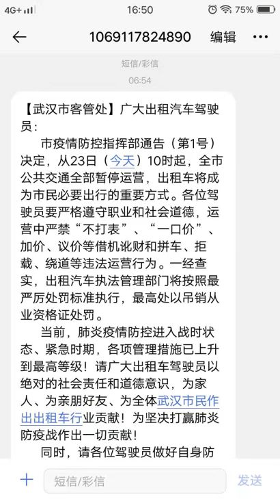
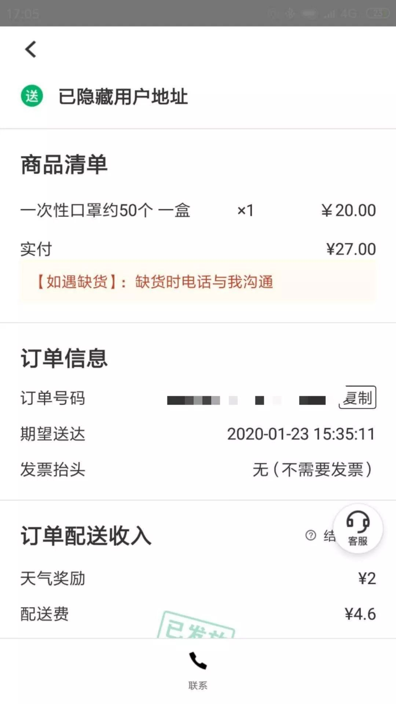

除夕夜，他们在武汉
原文链接 备份链接 图源B站UP主林晨同学自制视频 九位在武汉度过了除夕夜的普通人，他们从事着不同的职业，拥有不同的人生经历，但都在这座城市度过了可能是人生中最难忘的一个除夕。他们讲述的，不只是一个简单的夜晚，而是一场大疫之下，一个个普通 …
1月23日凌晨，武汉宣布自10时起，全市的航空、铁路、城市公交、地铁、轮渡、长途客运暂停运营，无特殊原因，市民不要离开武汉。新型冠状病毒肺炎，正考验着这座九省通衢的特大城市。
此后24小时，真实故事计划访问了几位选择留守武汉城的市民，还有医生、的士司机、外卖送餐员，他们是维持城市基本运营的行业从业者，我们试图了解留守武汉城中的人们正在经历什么，城中秩序如何，他们需要哪些方面的支援。
留守武汉，拒绝家人探望的女孩
口述：陈丹
武汉市汉阳区 公司职员
口述时间：1月23日下午
现在，我一个人在武汉的出租屋里。老家在距离武汉城开车4小时的地方。
1月20号，我发高烧38.2度。我不想把病传染给家里人，决定独自留在武汉，我跟爸妈说，春节不准备回家了。
1月中旬，新闻报道中只有41例病例，政府的宣传口径让我们觉得不用慌，所以当时我身边没有人戴口罩。19日晚上，一晚上突然报了77例新增病例，那天晚上开始，才有人戴口罩。在这个节骨眼生了病，我开始想去同济医院看，可考虑到那里是定点诊疗医院，我怕接触确诊患者容易感染病毒，于是我去了一家市里不那么大的医院看病。
医院会让咳嗽得厉害的患者，直接去做CT，我咳嗽得不厉害，医生做了血常规的检查，判断我是病毒性感冒，可他也不敢排除新型肺炎的可能。他们那里不能确诊，让我在医院打抗病毒的针，然后回去吃药、观察。医生嘱咐我，如果在家里出现发热、浑身没有力气、头晕、咳嗽，就去同济医院看——特别是没有力气和咳嗽，这两点需要注意。
现在我退烧了，喉咙疼，偶尔咳嗽，有力气。但是不知道为什么，心里还是很担心，怕我是新型肺炎。所以，我现在时刻留意自己是不是还有力气。
医生告诉我，只有同济、协和、金银潭医院等官方指定的发热门诊医院可以确诊，我不敢去，那里排队看病的人太多，我担心如果我没病，去了也会染上病毒。所以，我只能独自待在家里，天天消毒。每天吃阿莫西林和999之类的药物治疗感冒，部分抗普通流感病毒的药品，我就买不到了。
我还有15个口罩，10个N95的，剩下的是医用口罩。今天，我出门采购了一些生活用品和食物，之后我就不用出去了。昨天我看新闻里说酒精可以消毒，今天附近4家药店，酒精和84消毒液已经全部断货了，不知道现在补货了没有。
口罩多跑跑应该还能买得到，就是贵。我姐姐在老家买N95口罩，45块钱一个，据说现在好多了。我买的时候15块一个，当时我姐姐还开玩笑，说，你这边才15块钱，买了来我这里卖，就赚大发了。
看病的时候我遇到一个患者，在求医院让他住院。我在旁边听着，他判断自己得了新型肺炎，原本想去同济医院住院，但同济住满了。和医生说话的时候，那个人一直哭，说自己好怕。
后来武汉的朋友给我发了一些视频。一则视频里，医院里人满为患，人人戴着口罩。另一则视频，一个女人托着一个年长的男人，喊着医生救命，又哭着喊：“我也在发烧啊。”我心塞了很久，不相信这是假视频，因为我无法想象哪里的医院会是这样的景象。
原本，我有机会在封城之前回家去，但我主动留了下来。家里人都知道我感冒了，想来武汉城里照顾我，也让我拦住了。我骗他们说，我很安全，不发烧。那天晚上，我一整晚断断续续地做噩梦，我梦到自己要死了，醒来发现才过去半个小时。一个晚上做了无数个噩梦，梦特别长，时间特别慢。
市内交通停运之后，我不知道如果我真病倒了该怎么办，担心到时候叫不到车。
知道有不明原因肺炎，但一开始没太在意
口述：马雅
武汉市 公司职员
讲述时间：1月23日下午
我现在网上看官方通报，卫健委的，央视新闻的。
（疫情）爆出来是12月底，那时大家都很害怕，新闻通报“未发现明显人传人迹象”，同时，宣布抓了8个“造谣”的人。我个人觉得有一点不太好的是，在一开始发通报、辟谣的时候，应该提醒医护人员和民众做好充分准备，引起警惕。
我因此放松了警惕。当时群里有人发了华南海鲜市场被封锁、消毒的照片，我让她最好撤回，等官方通知，不要造谣传谣。后来官方出来辟谣后，虽然知道有这个不明原因肺炎的存在，但是就没太在意了。
后面，病例陆续增多，我也还没太在意。我觉得很多人是跟着官方在走，官方传达出来的感觉如果显得没那么紧要，大家就放松警惕了。后来，我发现国外出现病例，才真正觉得不对劲……
我22号决定退票，23号就封（城）了。新闻里说疫情的传染性太强、潜伏期长。我的身体有些不舒服，刚好和生理期碰在一起，不知道我的不舒服，是因为生理期，还是我已经染病，怕回家传给家人，所以一个人留在了武汉。独自在家，每天都很害怕，怕突然出事。也不敢去医院，我还没有明显的症状，去医院风险更大。
在出租屋，我白天注意给房间通风，外出穿严实保暖、戴好口罩，回来用医用酒精洗手，然后把衣服挂到阳台通风的地方，然后赶紧洗头才算放心。
封城当天，我出去买了点干粮。没有去人多的超市，在一个小商店里买了饼干、面条、调味、酱料，准备在电商上再买点玉米、红薯、牛奶。我不会做饭，蔬菜肉类就不买了，保持基本营养就行。外卖也是不敢点了，只能先这样。
我出去时，大街上的人基本都戴口罩了，除了极个别老年人。很多人在囤货。药店买口罩的人很多，好些药店已经断货了，消毒液很多也卖空了。没有买到消毒液，我只带回了十几个口罩和一支温度计。我买的东西都没有涨价。温度计8块，我买的那家药店口罩只有稳健医疗的医用护理口罩了，1.5元一个，为了保证每个人都能买到，每人只给买15个。
我们公司除了我，大多同事21号、22号都回家了。他们的防范意识都有待提高。我提醒回家的同事做好防护隔离，戴口罩分餐，因为潜伏期确实看不出来，没有人知道自己是不是携带者。但他们回答我，感染的估计是身体本身有点问题的老年人，儿童青少年很难得这个病。我觉得过于乐观了。
凌晨等超市开门采购的上班族
口述：曾迩纯
武汉市武昌区 出版行业从业者
口述时间：1月23日晚
2020年1月23日凌晨3点05分，我被朋友的电话叫醒。她很直白地说，刚刚看到武汉通知23号早上10点会封城的消息，问我有没有看到，就在电话里把防控指挥部的通告念了一遍，还建议我囤点物资。挂掉电话，确认了信息后，我与其他在武汉的朋友联络了一下，决定一早出门采购。
我住的附近没有24小时便利店。即使有，便利店也无法满足我个人吃、用的需求。所以我决定干脆早点出发，去大型超市买东西。最近几天，武汉的马路上车和人都少，早上更没什么车，一路畅通。我到超市的时候，超市还没开门，不过已经有几位市民到了，大家一起站在门口等。
采购大概花了一个小时。不知道是不是去得早的缘故，超市里的东西还很全。结账的时候排队，也没有以往我下班来买时那么长。回家后，我看到网上在传一颗白菜卖好几十块的图，特意去看了一眼我买到的大白菜价签，跟平时没什么区别，只要三块多。不过早上9点多回家后，我就没出去过了，菜价是否发生变化，也说不准。
 真故读者供图 | 1月23日早9:30，武汉某超市一角
真故读者供图 | 1月23日早9:30，武汉某超市一角
我的朋友则在生鲜平台网购，凌晨跟我打完电话后就下了单，当天下午送到的。换作平时，平台上班后一两个小时也应该到了。
武汉现在公共交通停运了，的士也比较少见（还限号），很快网约车也停了。路上的外卖小哥也比平时少了很多。封城期间我并不打算出门，宅在家里刚好可以追番补剧、打打游戏，避免添乱。不过毕竟身在疫情的“重灾区”，我在开始娱乐活动之前，我先忙着打扫卫生、全屋消毒，一天忙下来，游戏差点断签了——开个玩笑。
前几天我看新闻的时候，刷到目前的疫情地图。逐渐变红的各个感染区，让我莫名想起手机里的游戏“瘟疫公司（Plague.Inc）”。三年没怎么玩，它一直还在我手机里。身在武汉，又在封城的氛围里，点开这个游戏简直既视感MAX。这两天，莫名其妙地，几个特别难的关卡我都打出了很好的分数，大概是因为我本人身在疫区的原因吧（笑），也算是苦中作乐了。
市民们在路边拦车，说只要能出武汉去哪里都行
口述：许山
武汉市洪山区 出租车司机
口述时间：1月23日下午
以往武汉是个不夜城。
1月21号晚上，我在大路上开车，8点多就看不到什么人了，我才意识到这次肺炎疫情的严重性。一整天，不断有新闻出来，确诊人数不断增加。
1月22号出车，我戴了口罩，同时带了一瓶84消毒液。每载一名乘客，我都要消毒一次，门把手、坐垫等乘客能碰到的地方，我都喷上消毒水，然后擦一遍。
那天下午6点多，我送一个朋友去外地时，武汉市内车辆已经比较少了。我在司机群里看到，市内的出租车司机差不多8点钟就收班了。送完朋友回城的路上，我被拦下来，工作人员用电子体温计测了体温，没问题才让我通行。
到1月23号早上6点54分，我收到了客管处的短信，通知我们10点后实施交通管制，全市公共交通暂停运营，因此我们出租车将成为市里出行的重要交通方式。短信里呼吁我们遵守职业和社会道德，不要拒载、绕道、借机讹财。那之后，我出门送我的对班司机回汉口，发现路上的交通工具只剩下出租车和少数网约车了。送他的时候，路过了华南海鲜市场，那边早就封了起来，现在已经变成了无人区。

送完同事，回到武昌大概10点半左右。路过武昌火车站的时候，我看到那里一片寂静，隐约看见有医务人员在火车站里，估计是为了应对突发情况。路边行人比头一天多，许多推着行李箱的人，戴着口罩在等车。
 受访者供图 | 路边等车的武汉市民
受访者供图 | 路边等车的武汉市民
这些人都想出城，我听到他们拦车时说，只要能出武汉就行，随便去哪里，开的价钱也高。我下车，把当时的场景拍成了一段小视频，发到了家庭群里，然后就走了。实际上，出去的人，在高速上都会被拦下来测体温、往衣服上喷消毒水，体温正常的人才能出去。
今天（23号）还在出车的人，大多数是觉得今年生意不景气，想冒险赚点钱。另一方面，公共交通都没有了，大家也是想贡献一份力。
只要不是去医院的乘客，司机们都很乐意载。看到手里提着医院袋子的人，大家会害怕，防护措施再好，也怕有个万一。去医院的人也知道司机们害怕，为了打上车，他们有的人会挡在车子前面，恨不得趴上去。这样的乘客，往往自己已经做了到位的防护，都戴着口罩，我们载着他们去医院，唯独能做的只是戴口罩、消毒、不收现金、少交流。
我想起1月21号白天，我载过一个乘客去武汉中心医院，那时候还一切正常。医院门口还有出租车在等着载人——现在都没有了。
这两天，我回家后第一件事是换衣服、洗澡，家里有小孩，即使我出事，也不能传染给孩子。从今天开始我不打算出门了，该过年了。今年武汉过年，亲戚之间不走动了，不拜年就是这个春节的特色。
一线医护人员缺少防护服
口述：黄卓
武汉同济医院 医生
口述时间：1月23日晚
有关试剂盒供不应求的问题，我了解到的是，包括捷诺、辉睿在内的试剂商，已经生产了数万份试剂盒。试剂盒下发了，却没有用起来，中间有多少环节出问题不得而知。我院检验科也很着急，想给病人做却做不了。
我们今天最后一天班，但之后都得待命，有需求随时到岗。非特殊时期我们科室主要负责手术病人诊断、指导、预后，所以，本次肺炎我们原本不算一线科室，其实帮不上什么忙。只不过，这次波及面太广，基本医院所有科室都受影响——第一，每个科室都有前台接待病人，有感染的风险；第二，我们科不少人员的家属都在临床一线上，一线人员不少因疑似感染隔离，他们也就有被感染的风险。
我有一位同事，她丈夫在协和医院一线，所以为了科室其他人的安危，对她进行了调岗隔离观察。好在目前已经确定没事了，她没有感染肺炎。
我们肯定会担忧，但是大家依然要把手上的临床工作做完，这个时候作为医护人员，使命感很强。
我们医院很早就有新型冠状病毒感染肺炎的病例（官方说是12月27日）。当时，因为查不出来原因，我们高度怀疑是非典，开始响应防护措施。后来，有相同症状的人越来越多，12月底专家组下来调查，那时候我们医护已经很担心会越来越严重。我们多次试着在朋友圈呼吁提高防范，但是，不是圈内人真的毫无防范意识，觉得我们大惊小怪，还是该干嘛干嘛，这点让我觉得很悲哀。加上前期卫健委说未发现人传人、持续传染力低的官方说法，大家更不以为然了。
1月初就已经很严重了，早期具体收了多少病人不太清楚。呼吸内科有4层楼，大概300个床位。我估计在一周前床位开始紧缺，人手也紧缺。医院的新内科楼建成后，原本的老内科楼腾空开始装修。因为床位不够，这次直接划了一层楼给感染科用，大概可以增加100个床位，但还是不够。据我所知，有的医院连皮肤科和内分泌科病房都被征用当发热患者病房了，有的医院原本只有2个呼吸病区，2周内扩充到了6个病区。
科室里弥漫消毒水的味道，因为我们每天用1：100的84消毒液熏蒸。
正常来说，不直接接触病人的二线人员只需戴口罩，但发热门诊、出勤救护车，病房工作人员必须穿防护服。目前的状况是，防护服数量有限，又是一次性的，条件不允许人人都穿戴。据我所知，到目前为止，我们医院和其他医院都由于防护服紧缺，有部分一线医护人员穿不上防护服。
我们在科室必须戴口罩，但大概从1月21日开始，为了保证一线物资需求，口罩优先供给发热门诊和病房。其他科室，医院每人每天限量2个普通外科口罩。我们自己之前买了N95，现在已经买不到了。
这几天，我看到好多医院都在请求社会支援，市儿童，一医院，二医院，省中医，中南，协和等等。最让人生气的是，现在网上还有骗子用自己手机号码冒充医院骗资助。目前，我院也已经开始向社会求助，希望能够得到社会的物资援助。

“封城”首日下午，口罩脱销
口述：悟一
武汉市洪山区 外卖员
口述时间：1月24日上午
1月23号凌晨2点多，我刷微博看到武汉封城的消息，第一反应是：完了，忘了买点吃的喝的放家里了。后来又觉得，各级政府领导应该会考虑到这个问题，我就没有太担心。
那一天，我送了十几单，绝大部分订单都跟防护用品有关，口罩、洗手液，还有一部分是粮油、零食、方便面。11点多，我去洪山区徐东一路一个菜市场取货时，发现菜市场里很多菜贩子都打烊了，菜已经卖完了，卖肉的档口都还剩很多。
下午3点半多，我去取货时，越来越多商家告诉我们，没有口罩（指可阻隔病毒的医用外科口罩和N95）卖了。有一个人下单了口罩，我取货时，发现取的是无纺布的口罩和棉口罩，我告诉店主，戴这种口罩没有用，店主说她不知道，一个劲谢谢我，说要想办法进点好口罩卖。
受访者供图 | 当日订单截图
昨天，送到医院的订单还是会有人派送。起初没人接单，但这个单子会继续挂在app上，平台或商家会往里加打赏，配送费高到一定程度，就会有人愿意送。不过，骑手之间也会沟通，尽量不送往门诊输液处，大家都知道现在门诊处情况混乱。
下午2、3点钟，我在送餐路上发现附近两个商场关闭，打开外卖软件，常吃的煲仔饭也打烊了，我这才开始担心，意识到晚上没饭吃了，就去买了些方便面，但没有额外储备吃的。我在家附近问了一圈便利店、水果摊、小型连锁超市，他们说会坚持开门。今天早上出门时，发现确实也都开门了，我感觉自己不用担心没有吃的。
我送餐的地方在武汉是相对繁华的区域，平时道路非常堵。昨天，路上没有公交车，私家车都在加油，其他地方道路都很顺畅，只有加油站那个路口堵车。街上的行人很少，年轻人九成都会戴口罩，一些上了年纪的人大多没有戴口罩。
有一些顾客比较谨慎，送东西给他的时候，他们会离得远一些，或者是门开一条小缝，把东西拿进去。
22号凌晨，隔壁社区发现了肺炎患者，来了警车和医护人员。听说之后，我开始有些后怕，因为我负责送餐的区域有四家医院，1月份以来，我陆续送过这几家医院的单子，近期我也还在往医院送餐。
现在想想，1月中旬开始，我去送医院的订单时，感觉在门诊打吊瓶的、候诊的人已经越来越多了，病人们大多戴着口罩。医院本身好像没有什么防护措施，当时好多医生都没戴口罩。当时我以为是流感季，发烧的人多。
1月21号之后，我才戴上口罩进行防护，因为那时，新闻报道中疫情开始变得严重。以前根本不觉得严重，也没有人告诉我们要重视。
1月22号开始，外卖平台开始反复提醒我们要戴口罩、洗手、注意个人卫生、给餐箱消毒。随之而来，买口罩的人也越来越多，派送的订单里也有很多都是口罩、防护用品，我们才开始重视起来。
同一天，我送餐时看到一些小区里，清洁人员正在对电梯进行消毒，一些小区不让外卖员进，有些小区会在门口设置红外测温装置，出入小区的人要举手进行体温测试。
我老家是鄂西北的，今年春节，因为有事要处理，我没打算回家。看到封城消息后，第一时间担心同在武汉工作的弟弟能不能回家。接着，我想到这个城市的未来，我们还能做工作吗？毕竟从来没遇到过这种情况。
今天是大年三十，武汉下着雨，我没去送餐。下楼去买罐装粥的时候，因为没戴口罩，我还被人嫌弃了。便利店老板强行送我一个棉口罩让我戴上，其实这种口罩基本没什么用，但戴上后挺暖和。
明天我会戴上口罩，手套，准备好给自己、电动车和餐盒消毒的湿纸巾以及酒精，接着工作。
*为保护受访者隐私，文中部分为化名。
-———————————————————————-
撰文 | 温丽虹 成琨 崔玉敏
版式 | 曾杏
提示：
如果你身在疫区，有故事想讲、有信息需要向外界传递，欢迎在真故评论区留言。
原文链接 备份链接 图源B站UP主林晨同学自制视频 九位在武汉度过了除夕夜的普通人，他们从事着不同的职业，拥有不同的人生经历，但都在这座城市度过了可能是人生中最难忘的一个除夕。他们讲述的，不只是一个简单的夜晚，而是一场大疫之下，一个个普通 …
原文链接 备份链接 作 者：叶青 中南财经政法大学教授、博导 湖北省统计局副局长 正和岛蓝色岛邻 来 源：正和岛（ID：zhenghedao） 我算是外来的武汉人。 1979年10月从老家福建建阳到湖北财经学院（即现在的中南财经政法大学） …
原文链接 备份链接 文 | 王彦入 王丹妮 程静之 殷盛琳 李晓芳 周航 叶雯 曾宪雯 编辑 | 王珊 陶若谷 33岁的刘科戴上两层口罩独自走进地铁，夹杂在路人中间。像他这样拉着行李箱的人并不少见，彼此间默契地保持着距离。三天前，他刚刚从 …
原文链接 备份链接 作者 | 王晓 出品 | 棱镜·腾讯小满工作室 欢迎下载腾讯新闻APP，阅读更多优质资讯 对于湖北人民来说，2020年的这个除夕夜太不平常了。 “药店大姐告诉我们，口罩绝不涨价，不发国难财，而且告知我们第二天早7点开 …
原文链接 备份链接 本视频为今年的年三十，武汉父母与身在外地的孩子 隔空互送新年祝福 年夜饭，是中国人最看重的家庭宴会。1月24日，武汉封城第二天，年三十，有23个武汉人给我们分享了他们的年夜饭。 @王启明： 今天是武汉封城的第二天，也是 …